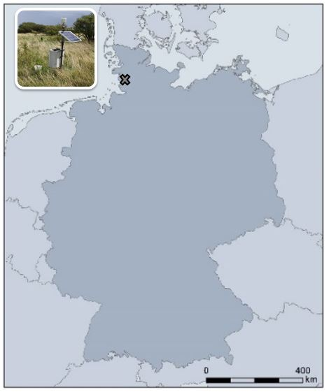

The post was last updated on 2021-03-03.
Some of the data that I will discuss within the redox section is originally from a site in Northern Germany - Polder Speicherkoog. Tim conducted some of his first experiments at this site with Pt electrodes that were continuously deployed for a 20-month period. In 1989, little was known whether self-constructed redox electrodes are capable to get proper data for such a long period ( 👉️ see the article).

Since 1989, a lot of things with regard to EH measurements evolved. We don’t need to go once a week to the field, independent of the weather⛈️ , and storing data on a drive is no issue anymore. Meanwhile, we can sit in our cosy chair, drink ☕ and enjoy the benefits of automatic data logging, data transmission via GPRS and downloading data from a webserver. The temporal interval is also not an issue anymore (daily, hourly, every minute…you name it).
Since April 2010, we measure a variety of parameters at Polder Speicherkoog (see sketch below). The measurement depths are in 10, 20, 40, 60, 100 and 150 cm soil depth. The spatial resolution to determine redox dynamics over time is quit high, even though when dealing with EH you would love to have electrodes installed every cm 😎 I guess costs and feasibility of this wish render it impossible and we have to wait for another decade to solve some of the mysteries about spatial heterogeneity.
Parameters determined at Polder Speicherkoog
What makes this site particularly interesting with respect to redox dynamics?!
First of all, it features intense water table draw downs in the summer time while the water table is very high at the surface during the winter time. Two meters of water table decline is intense.
Second, with the declining water table oxygen is capable to diffuse downwards the soil profile and facilitate oxidizing conditions over time. The soil profile, which is a Calcaric Gleysol (Kalkmarsch in the German classification and soil of the year 2009), is differentiated in a part that is continuously oxidizing in the topsoil (10/20/30 cm depth), temporarily reducing in the intermittent soil profile (60/100 cm depth), and continuously reducing in the subsoil (150 cm depth; only the depths in 10/60/150 cm are shown for a better overview).

As you can see, if the water table declines underneath the 60 cm depth the pores start to drain and the soil profile becomes successively aerated. In most cases, the EH response is straightforward with short a delay ranging from some days to a couple of weeks. If you take a look at the water table in the summer of 2018 (which was above average warm 🔥 and I can tell, because we live in the top floor 😅 ), we have no response of the EH in 150 cm soil depth. Why is that ❓️ It is because the microorganisms in the soil consume the O2 (aerobic respiration) on the way from the soil surface towards the location where the Pt tip is positioned in 150 cm soil depth. Even though the pores in the subsoil drained considerably, the voids are filled with CO2 and/or CH4 rather than O2.

This annual interplay of water table and EH - driven by meteorological parameters such as evapotranspiration - has a profound impact on marsh ecosystems. If you are interested you can take a read of publications from this particular site 👇🏻 :